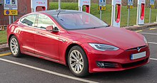
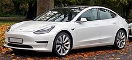
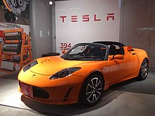

"Tesla electric car" redirects here. Not to be confused with Nikola Tesla electric car hoax.
As of December 2022, Tesla offers four car models: Model S, Model X, Model 3 and Model Y, and a semi-truck. Tesla's first vehicle, the first-generation Tesla Roadster, is no longer sold. Tesla has plans for a second-generation Roadster and a pickup called the Cybertruck.

Available
Model S
Main article: Tesla Model S
Tesla Model S
The Model S is a five-door liftback sedan. As of June 2020, the Model S Long Range Plus had an EPA range of 402 miles (647 km), the highest of any battery electric vehicle at the time.
[96] Deliveries began on June 22, 2012.[97] The Model S was the bestselling electric car worldwide for 2015 and 2016, selling an estimated 50,931 units (2016).[41]

r/>
Model 3
Main article: Tesla Model 3
Tesla Model 3
The Model 3 is a four-door fastback sedan. One week after its unveiling in 2016, Tesla reported over 325,000 reservations.[99] Bloomberg News claimed that, due to the number of reservations,
"the Model 3's unveiling was unique in the 100-year history of the mass-market automobile."[100] Limited production began in July 2017.[101]
In March 2020, the Model 3 broke the sales record for electric cars. Cumulative sales passed 1 million in June 2021.[9][102][103]
The Model 3 ranked as the world's bestselling electric car from 2018 to 2021,[103][104][105]
and also as the bestselling electric car in the United States since 2018.[106][107][108] The Model 3 was the bestselling passenger car in Norway and the Netherlands in 2019.[109][110]

Tesla Roadster
Main article: Tesla Roadster (first generation)
The original Roadster
The original Tesla Roadster[128] was a two-seater sports car, evolved from the Lotus Elise chassis.[129] It was produced from 2008 to 2012. The Roadster was the first highway-legal serial production electric car to use lithium-ion battery cells and the first production all-electric car to travel more than 200 miles (320 km) per charge.